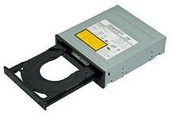
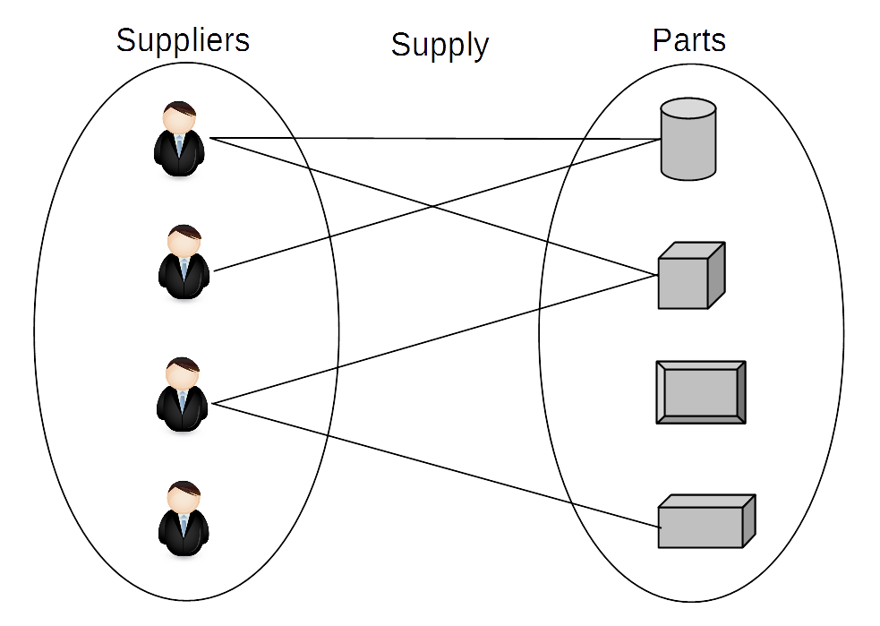
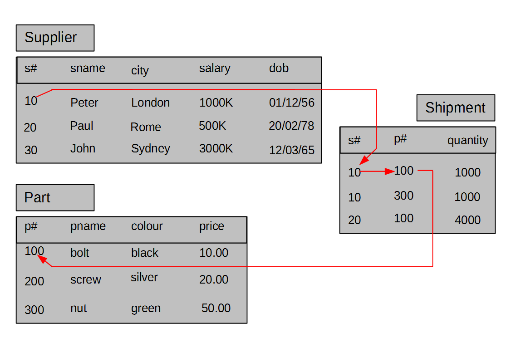
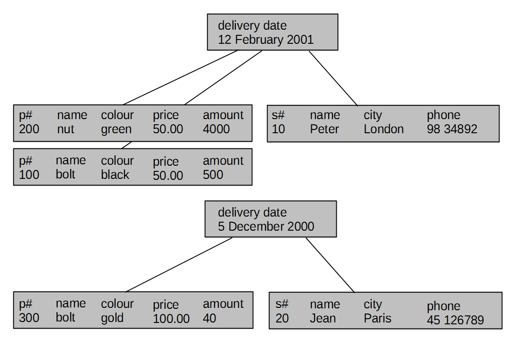
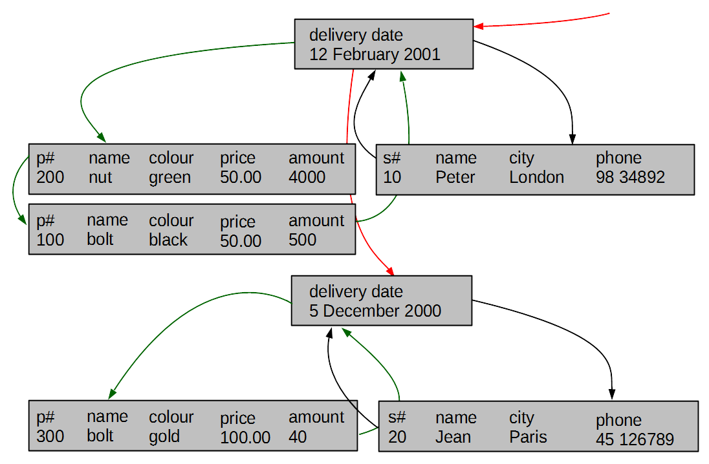

Introduction
Outline
Data ? What is it ?
- Data is a set of values of qualitative or quantitative variables;
The pieces of data are the individual elements of information - Data can be measured, collected and reported, and analyzed, whereupon it can be visualized using graphs or images
- Data as a general concept refers to the fact that some existing information or knowledge is represented or coded in some form suitable for better usage or processing
- A bit is the smallest unit of Data
- A bit is the basic unit of information in computing and digital communications
- A bit can have only one of two values, and may therefore be physically implemented with a two-state device
- These values are most commonly represented as either a 0 or 1
- A byte is a sequence of 8 bits
Introduction
Outline
Electronic Storage Devices
- Electronic storage devices provide read/write access to the sequences of bytes
- Transient (volatile) storage device is computer memory that requires power to maintain the stored information; it retains its contents while powered on but when the power is interrupted the stored data is lost very rapidly or immediately
- Random-access memory (RAM) device allows data items to be accessed (read or written) in almost the same amount of time irrespective of the physical location of data inside the memory

Electronic Storage Devices
- Persistent storage (nonvolatile) device is any method or apparatus for efficiently storing data structures such that they can continue to be accessed using memory instructions or memory APIs even after the end of the process that created or last modified them
- Persistent storage (nonvolatile) devices include:
- Hard Disk Drives (HDD)
- Solid State Drives (SSD)
- Non-Volatile Memory (NVM)
- Optical Disk Drives (ODD)
Introduction
Outline
Persistent Storage Devices
- Hard Disk Drive (HDD) is a data storage device used for storing and retrieving digital information
- Hard disk drive consist of one or more rapidly rotating disks covered with magnetic material and one or more disk heads located on the movable arms
- A moveable arm with the disk heads is visible below just above disk platters

Persistent Storage Devices
- A simple model of HDD consists of a number of disk platters and read/write disk heads that can change positions over the platters

- A disk platter consists of a number of tracks and each track consists of a sequence of sectors
- All tracks located on different platters and equally distant from a center of platters is called as a cylinder
- A concept of cylinders can be considered as a logical data model at the lowest level of abstraction
Persistent Storage Devices
- Physical parameters of HDD:
- Seek time: time needed to move disk arm to a given cylinder position (from ~15 to ~2 msec)
- Rotational latency: time needed to rotate a platter to a given position (~ 4 msec)
- Transfer time: time needed to read/write data from/to a platter (~13 Mbytes per sec)
- Average disk access time: an average time needed to transfer a block of data (~10msec = 0.001 sec)
- For a comparison main memory access time, time needed to read 1 byte from RAM (~10nanosec = 0.000000001 sec)
- Operations: read sector, write sector, move disk head
Persistent Storage Devices
- Solid State Drive (SSD) uses nonvolatile memory, i.e., NAND flash as its storage media
- SSD has no moving parts and it only uses silicon as its media
- SSDs are common today in mobile devices such as smartphones and digital cameras; SD (Secure Digital) and CF (CompactFlash) memory cards are smaller and less complex versions of an SSD
- Both HDDand SSD are part of a class of storage called block devices
- Block devices use logical addressing to access data and abstract the physical media, using small, fixed, contiguous segments of bytes as the addressable unit
Persistent Storage Devices
- Physical parameters of SSD:
- Random access time: time needed to retrieve data from various locations in memory (under 0.1 msec)
- Transfer time: reading up to 400 Mb/sec, writing at only 10-20 Mb/sec because all bits must be set to 0 before setting to 1, transfer is slower when a lot of individual blocks are accessed
- Capacity: 16Gb per chip, SSD consists of from 8 to 226 chips
- For a comparison main memory access time, time needed to read 1 byte from RAM (~10nanosec = 0.000000001 sec)
- Operations: read a sequence of bytes, write a sequence of bytes
Persistent Storage Devices
- Non-Volatile Memory (NVM) is the name for a group of new technologies such as Phase-Change RAM, Magnetic RAM and Resistive RAM that enable non-volatile (persistent), memory chips that require low energy, and have density and latency closer to current DRAM chips
- NVM has 4 times faster input/output operations per second than SSD and seek time for data and is ten times faster than SSD
- NVM supports byte-addressable accesses and stores with a lower latency than SSD
- The important properties of NVM include:
- byte-addressability, NVM supports byte-addressable loads and stores, no need to transfer data in blocks
- high write throughput, NVM delivers more than an order of magnitude higher write throughput compared to SSD
- read-write asymmetry, in certain NVM technologies, write take longer to complete when compared to read and excessive writes to a single memory cell can destroy it
Persistent Storage Devices
- Optical Disk Drives (ODD)is a disk drive that use laser light or electromagnetic waves within or near the visible light spectrum as part of the process of reading or writing data to or from optical discs.

- Compact discs, DVDs, and Blu-ray discs are common types of optical media which can be read and recorded by such drives
- DVD writer drive is the most common for desktop PCs and laptops
Persistent Storage Devices
- Logical model of persistent storage:
- Persistent storage is a sequence of fixed size data blocks

- A data block is a contiguous sequence of 2 Kbytes, or 4 Kbytes, or 8 Kbytes, or 16 Kbytes, or 32 Kbytes
- A data block is identified by a block address
Introduction
Outline
File systems
- A data block-based logical model of persistent storage is too simplistic for adavanced data processing applications
- A sequence of data blocks is partitioned into variable subsequence of data blocks called as files and the names associated with the files uniquely identify each file
- A file is a collection of records
- A record can be stored in one or more data blocks and data block can contain a number of records
- A record is a sequence of fields
- A field is a pair [address, value] where value is implemented as sequences of bytes located in a data block and address consists of file name, block number, offset within a block
- A file definition determines the names of fields and the length of each field
File systems
- Operations on files:
- open file
- close file
- read/write a record at a given address
- read/write the next record
- An example of a simple file system:
- STUDENT file
STUDENT(number, firstname, lastname, date-of-birth, degree)
- SUBJECT file
SUBJECT(code, title, credits)
ENROLMENT(student-number, subject-code, enrolment-date, status)
File systems
- Limitations of file systems
- Separation and isolation of data
- Data dependence
- Incompatible formats of files
- Fixed queries/proliferation of application programs
- No provision for security or integrity
- No recovery from hardware or software failures
- No provision for shared access
Introduction
Outline
Database systems
- Database systems eliminate the following important limitations of file systems:
- Database systems store the definitions of data stored together with data
- Database systems provide a universal query language that can used for quick implementation of ad-hoc access to data
- Database systems implement a standard and unified collection of different types of data, like for example, integer, float, string, date, and the others
- Database systems provide the mechanism to enforce security and integrity of data
- Database systems implement the mechanism to automatically restore data after hardware or software failures
- Database systems implement the mechanism for shared and concurrent access to data by many different users
Database systems
- A database is a shared collection of logically related data designed to meet the information needs of an organization
- We can also say that at a higher level of abstraction a database is a description of selected fragment of the reality
- A database may have different views at a conceptual (abstract) level and at a logical level
- Usually, at a conceptual level (abstract level) a database is a collection of objects (entities) described by the values of properties (attributes) and related to each other through associations (relationships)
- A diagram below represents “suppliers” and “parts” (objects) and an association “supplies” that links “suppliers” and “parts”

Database systems
- Usually, at a logical level a database is a collection of tables that consist of headers, rows, and columns
- It is also possible that at a logical level a database is a collection of records linked with pointers or it is a collection of hierarchical structures
- Example of a conceptual view of a database:
- A database contains information about suppliers, parts, and shipments of parts done by suppliers
- A conceptual schema:
Database systems
- Example of a conceptual view of a database:
- A database contains information about suppliers, parts, and shipments of parts done by suppliers
- An instance diagram:

Database systems
- Example of a logical view of a database:
- A database contains information about suppliers, parts , and shipments of parts done by suppliers
- A logical view above is also called as a tabular view of data

Database systems
- Another example of a logical view of a database:
- A database contains information about suppliers, parts , and shipments of parts done by suppliers
- A logical view above is also called as a hierarchical view of data

Database systems
- Yet another example of a logical view of a database:
- A database contains information about suppliers, parts , and shipments of parts done by suppliers
- A logical view above is also called as a network view of data

Database systems
- Abstraction levels:
- Hardware level: bit, byte, sector, track, cylinder
- Physical level: byte, data block, sequence of data blocks
- File level: field, address of field, record, file
- Logical level: attribute, value, row, column, link, table, hierarchy, network
- Conceptual level: object, property, value, link, class of objects, association
Introduction
Outline
Database Management Systems
- Database Management System (DBMS) is a software system that allows its users to define, create, maintain, and control access to a database
- DBMS implements the following languages:
- Data Definition Language (DDL) allows the users to specify database structures at either conceptual or logical levels
- Data Manipulation Language (DML) allows the users to insert, modify, delete the contents of a database at either conceptual or logical levels
- Query Language (QL) allows the users to retrieve the contents of a database at either conceptual or logical levels
- Access Control Language (ACL) allows the users to determine many different levels of access to data at either conceptual or logical levels
- Database Administration Language (DAL) allows the users to administer database at either logical or physical levels
Database Management Systems
- All people of Database Management Systems
- System analyst
- Database designer
- Application developer
- Database administrator
- Security administrator
- End-user
Database Mangement Systems
- Advantages of Database Management Systems
- Control of data redundancy
- Control of data consistency
- Sharing of data
- Improved security
- Improved performance (not always)
- Increased productivity
Database Management Systems
- Disadvantages of Database Management Systems
- Complexity
- Size
- Running and maintenance costs
- Performance
- Incompatibilities between different systems
- High cost of failure
References
- C. Coronel, S. Morris, A. Basta, M. Zgola, Data Management and Security, Chapter 1, Cengage Compose eBook, 2018, eBook: Data Management and Security, 1st Edition
- T. Connoly, C. Begg, Database Systems, A Practical Approach to Design, Implementation, and Management, Chapter 1 Introduction to Databases, Pearson Education Ltd, 2015